밀리터리 잡담
게시: 2021-06-17T06:30:11+09:00
<WW2 미해군 구축함 취사병의 고난> Boston 항구에는 유명한 범선 USS Constitution도 있지만 WW2의 Fletcher급 구축함 USS Cassin Young도 있습니다. 여기 가봤는데 인상적이었던 부분이 주방이었습니다. 제 기억으로는 저 사진보다 굉장히 좁았고 큰 솥단지 2~3개 외엔 별 주방기구도 별로 없었던 것 같았습니다. 거기에 당시 취사병의 수기가 적힌 안내판을 읽어봤는데 내용이 대충 이랬습니다. "300여명이 먹을 밥을 짓느라 새벽부터 한밤중까지 쉴 틈이 없이 바빴다. 정말 한시도 쉬지 못하고 계속 cooking을 했다. Cooking을 하지 않을 때는 baking을 해야 했다. 하루에도 xxx 파운드의 빵과 xxx개의 쿠키를 구웠다." 최근 군대 식단이 부실하다는 뉴스와 관련되어 꽤 푸짐한 음식이 올라온 3군 중 가장 낫다는 우리 해군 식판 사진에 대해 "3군 중 해군 취사병이 가장 빡세다"라는 댓글과 "그건 전세계 해군이 마찬가지"라는 댓글을 보고 문득 기억났습니다. * 사진은 USS Cassin Young 구축함의 주방, 그리고 샘플 메뉴. * 수요일 메뉴 아침 : 냉장 무화과, 오트밀, 에그 스크램블, 해쉬브라운 감자, 계피빵, 버터, 우유, 커피 점심 : 셀러리 크림 수프, 송아지 고기말이, 빵가루 입힌 웻지 감자, 양파볶음, 양상추 샐러드, 프렌츠 드레싱, 초콜릿 아이스크림, 빵, 버터, 커피 저녁 : 중국식 고기야채 볶음국수, 파인애플 콜슬로, 살구 크림 파이, 통밀빵, 버터, 커피
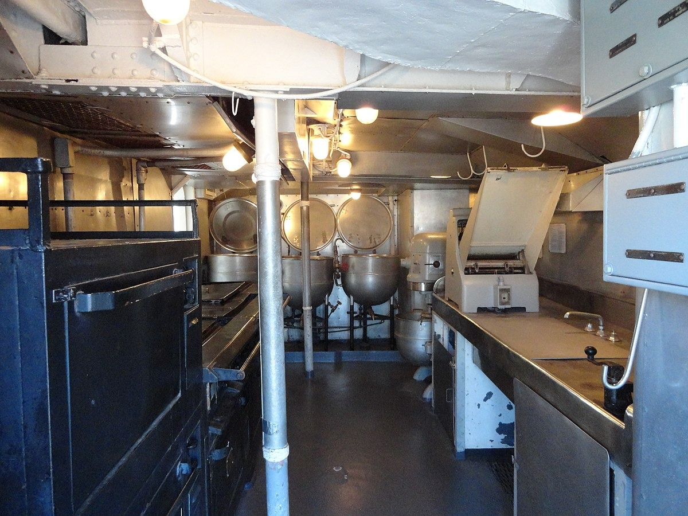 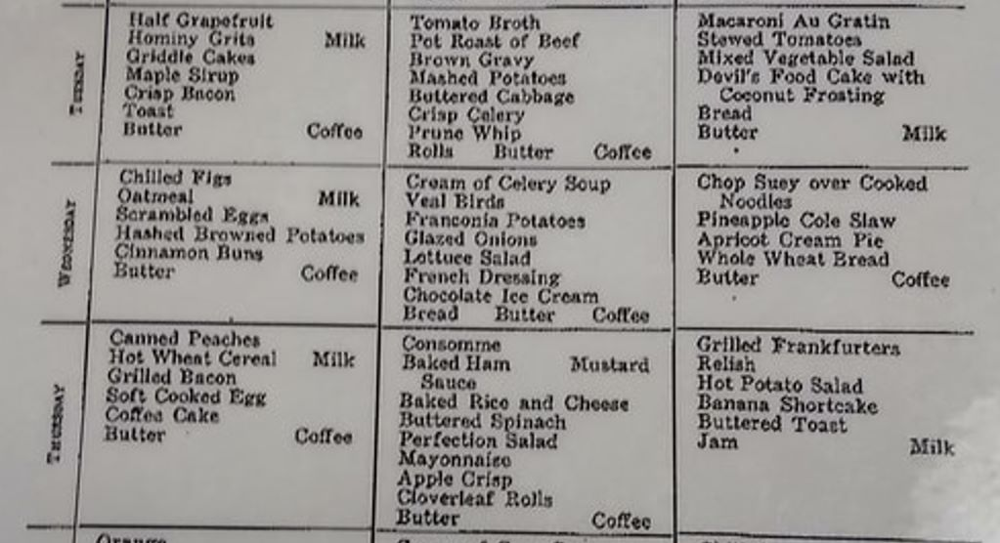
<캐터펄트가 없는 항모는 무쓸모인가> Su-33을 베낀 중국해군 함재기 J-15에 대해서는 여러가지 험담과 비웃음이 많음. 가장 흔한 것은 캐터펄트 없이 스키 점프대를 이용하는 STOBAR("Short Take-Off But Arrested Recovery") 특성상 탑재 무장량도 적을 수 밖에 없고 연료도 다 채우지 못해서 유효 전투 반경도 120km 밖에 안된다는 것. 그러나 그런 험담이 대부분 사실과는 다르다는 것을 지적하는 The Diplomat의 기고글이 있는데 (원문은 여기), 캐터펄트가 없더라도 항모가 전속 항진하면서 맞바람을 충분히 일으켜주면 상당한 무장과 연료를 탑재 가능하다는 것. 그리고 탑재한 공대지 미쓸 사거리만도 200km인데 유효전투 반경 120km 썰은 말이 안된다는 지적. 실제로는 1200km는 가능하다고. 또한 full payload는 분명히 떨어지겠지만 어차피 미해군 함재기는 물론 지상발진 공군기도 full payload로 이륙하는 경우가 실전에서도 거의 없다는 지적. 물론 캐터펄트 발진 함재기가 더 우월한 것은 사실. 가령 아래 사진은 1962년 일본 요꼬스까에 정박 중인 USS Coral Sea (CVA 43)에서 맞바람 없이도 그대로 이륙하는 F3H-2 Demon의 모습. STOBAR 함재기의 경우 어뢰를 맞든가 기관 고장이 나든가 해서 항모 속도가 떨어지거나 멈춰서면 이륙 자체가 거의 불가능해짐.
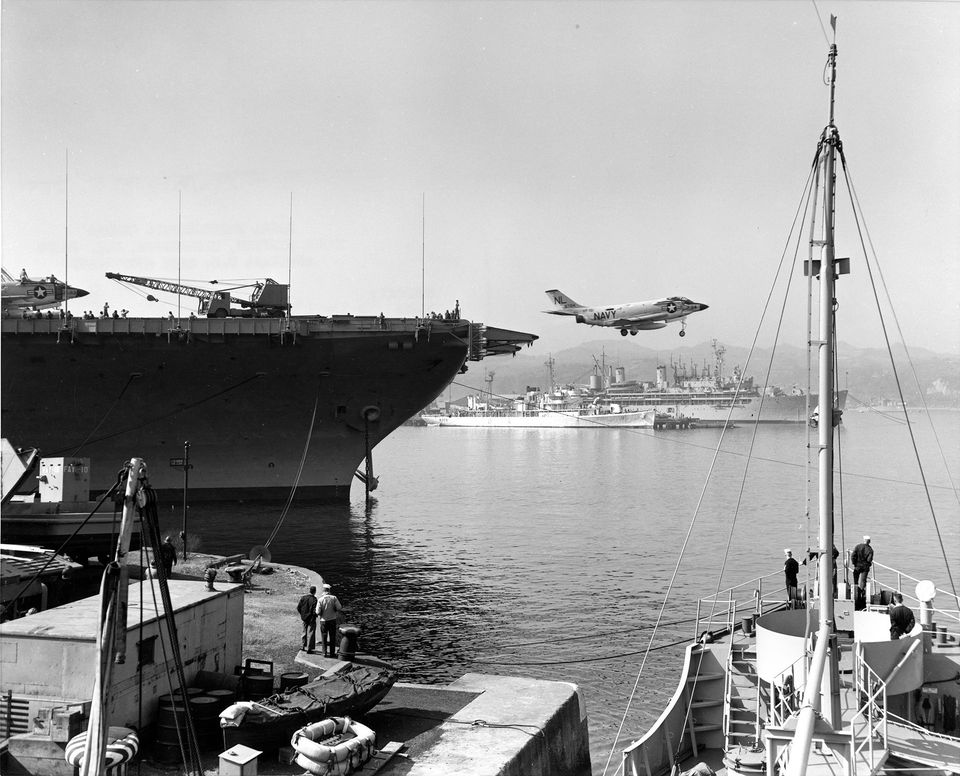 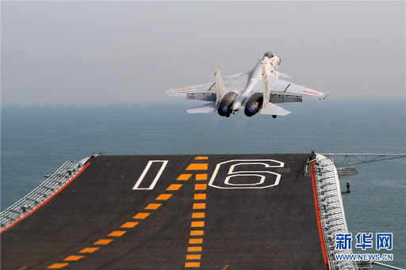
<미군도 탄피 주울까> 사진은 1944년 9월 팔라우 섬에 포격을 가한 이후 순양함 USS Miami (CL-89)의 갑판. 6인치 포탄의 탄피가 어지럽게 널려있음. 저렇게 발사한 뒤에 남은 포탄 탄피는 어떻게 했을까? 쿨한 미군답게 그냥 바다에 쳐넣었을까 아니면 쫀쫀하게 기지에 가져가서 그걸 또 미본토 공장에 보내 재활용했을까? 그렇게 재활용하기 위한 수송비와 인건비가 더 들지 않았을까? 정답은 재활용 다 했음. 소총 탄피까지는 몰라도, 아무리 미쿡이라도 전쟁나면 물자가 부족해지므로 온갖 궁여지책 다 짜냈음. 특히 탄약 제조에 많이 사용되는 구리가 부족했음. 어느 정도로 부족했는가하면 원래 95% 구리로 만들어져야 하는 1센트 동전을 1943년에는 아연도금한 강철로 만듬. 이건 1943 steel cent라고 희귀 동전에 속함. (두번째 사진)
* 물론 모든 탄피들이 다 재활용 공장으로 간 것은 아님. 상당수가 기념품 챙기려는 사람들에 의해 저렇게 거실 장식품으로...
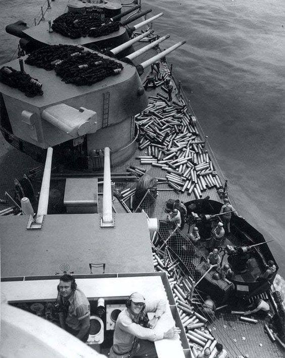 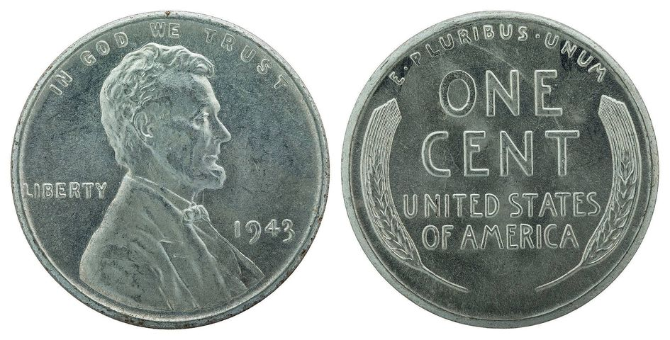 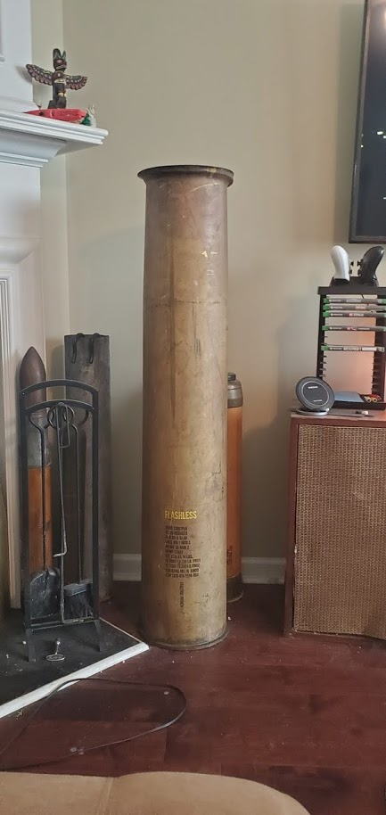
<유압 vs. 증기 사출기> WW2 기록 필름을 보면 함재기들이 이함할 때 요즘 제트기 이함할 때처럼 뒤에 캐터펄트의 증기가 쉭쉭 나오는 장면이 안 보임. 이유는 크게 2가지인데 1) 당시 함재기들 중 가벼운 전투기 등은 캐터펄트의 도움 없이 그냥 이함하는 경우가 많았음. 2) 당시 캐터펄트는 증기가 아니라 유압을 이용. 그러나 유압식 사출기는 힘도 딸리는데다 고압 고온의 오일이 기화되면서 폭발할 위험이 상존. 실제로 1954년 USS Bennington (CV-20)에서 사출기 폭발 사고가 발생하여 무려 103명 사망, 200명 부상이라는 참상 발생. 그래서 영국해군은 일찍부터 증기식 사출기를 연구했고 1951년 HMS Perseus에 그걸 설치하여 테스트. 이 과정은 미해군에게도 그대로 공유되었는데, 발명과 연구는 영국이 앞섰으나 정작 실전 배치는 미해군이 1954년 USS Hancock에 처음 구현. ** 아래 사진은 최초의 스팀 캐터펄트를 장착 시험 중인 HMS Perseus.
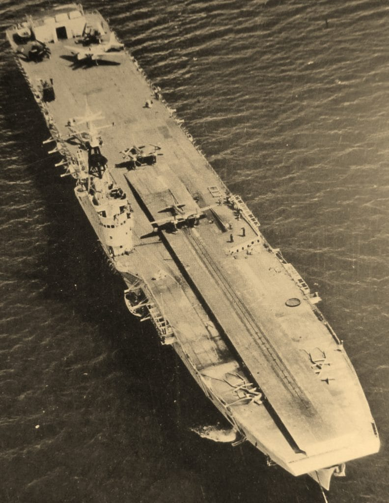
<영국해군의 위용> WW2 당시 항공모함과 현대 항공모함의 차이 중 1) Angled flight deck 2) Steam catapult 3) Ski jump 4) Optical landing system("Meatball", 아래 그림) 모조리 WW2 중 또는 그 직후 영국해군이 발명한 것. Respect.
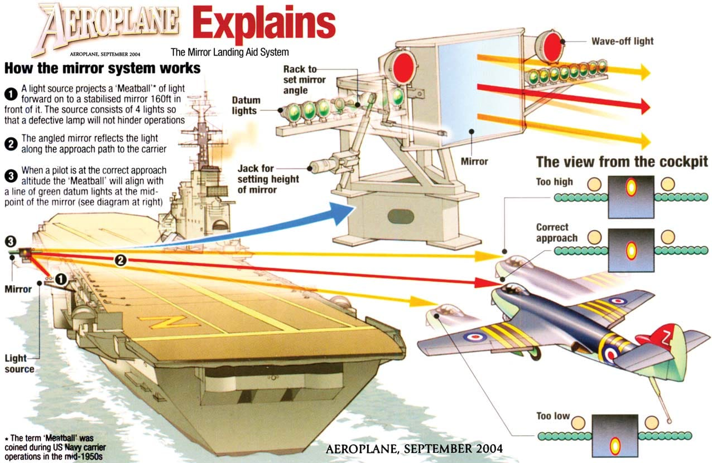
<왜 증기가 새나?> 1954년 6월, USS Hancock에서 미해군 최초로 steam catapult에 의한 함재기 사출이 이루어졌고 그 영광(?)은 Grumman S2F-1 Tracker에게 돌아감. (사진1) WW2 기간 중의 함재기 이함 장면에서는 저런 증기가 안 보이는데, 이유는 당시엔 유압식 사출기를 사용했거나 아예 사출기를 안 썼기 때문이고, 당시 유압식 사출기는 pulley에 의해 shuttle을 당기는 방식이어서 힘이 약했음. (사진2) 그런데 반대로 생각해보면 왜 현대식 증기 사출기는 저렇게 증기가 샐까? 증기가 새면 압력이 떨어져서 힘이 약해질텐데? 증기 사출기의 핵심은 pulley에 의해 shuttle을 당기는 것이 아니라 고압 증기의 힘으로 셔틀을 직접 미는 것. 그 구조상 피스톤이 활강하는 실린더의 길이 방향으로 피스톤과 셔틀을 연결하는 축이 활강할 open slit이 있어야 함. 그 slit을 통해 증기가 콸콸 샘. 그 slit을 매우기 위해 고무로 된 seal이 피스톤-셔틀 연결축이 지나갈 때만 (고무의 탄성을 이용해서) 열렸다 닫힘. 그렇게 잠깐 고무 seal 열릴 때 증기가 저렇게 샘. (사진3, 4) 원래 고무는 시간이 지나면 필연적으로 경화되는데, 무슨 특수 고무를 이용하는지 모르겠으나 저렇게 긴 slit을 저렇게 고온 고압의 증기를 견뎌가며 1번 항해에서 교체 없이 쓰는 것을 보면 참 대단. 최소 하루 50회 사출 X 30일 X 3달 = 4500회 쓸텐데. 타이어와 같은 재질의 고무를 써도 되나?
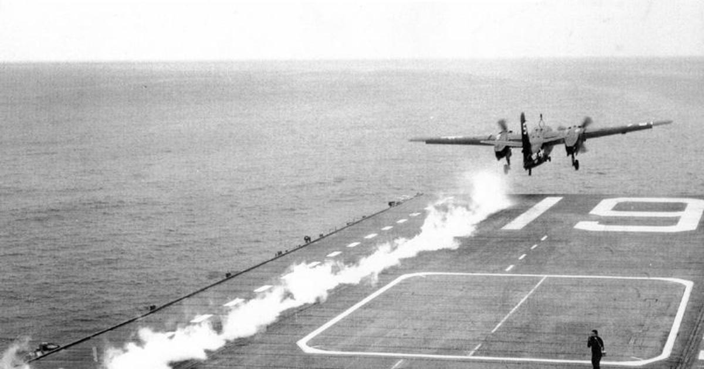 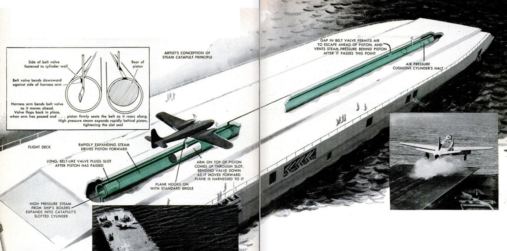 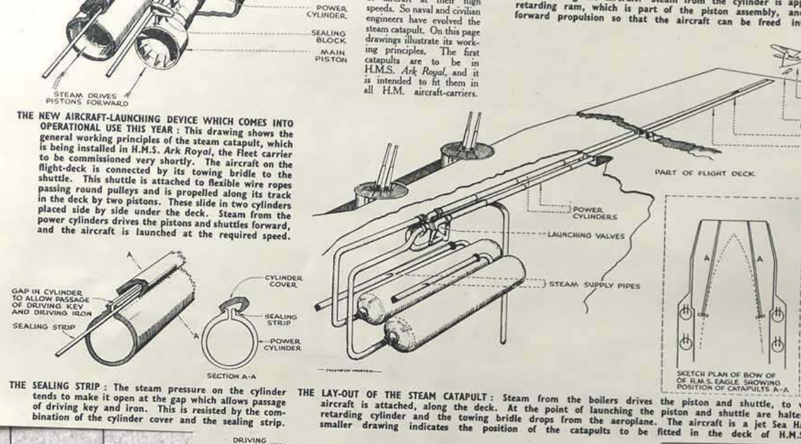
<트황상이 질색하신 EMALS> Steam catapult는 아까 봤듯이 기본적으로 질질 새는' 구조이고 고무니 증기 파이프니 해서 유지보수도 자주 해줘야 함. 이걸 별다른 개조 없이 무려 70년간 써왔으니 오히려 그게 놀라운 일. 게다가 steam catapult는 원자력이든 중유든 보일러를 쓰는 항모에서만 사용가능한 옵션. 경항모에서는 아예 불가능. 가스터빈과 디젤엔진을 쓰는 HMS Queen Elizabeth 같은 중형 항모에서도 사용이 불가능. 그래서 나온 것이 EMALS (Electromagnetic Aircraft Launch System). HMS Queen Elizabeth에서도 나중에 장착을 고려 중이라고 함. 그러나 아직 문제점이 꽤 있는 모양. 중국의 4번째 항모에서도 이거 쓴다고 함.
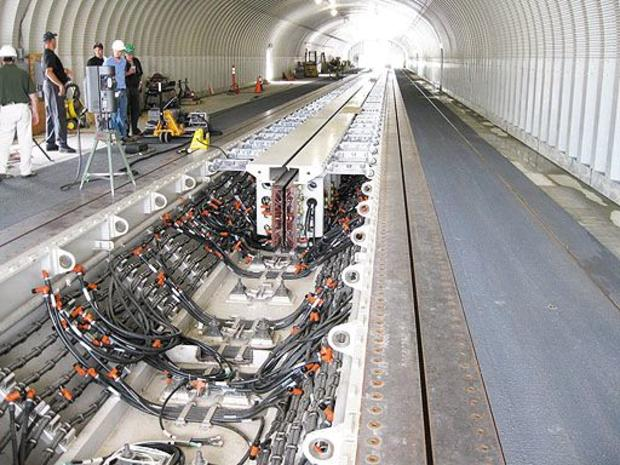
<탁트인 시야에 집착하는 영길리> 항모에 착함할 때 가장 거슬리는 것은 항공기의 긴 코 때문에 비행갑판이 잘 안 보인다는 것. 프로펠러기는 어쩔 수가 없었으나 제트기를 만들면서 엔진이 기체 후반부로 넘어가며 이걸 해결할 수 있게 됨. 영국해군은 옳다커니 하면서 극단적으로 조종석을 기체 코 끝에 배치. 이 특성은 Harrier까지 그대로 이어짐. 1번째 사진의 Hawker Sea Hawk는 이를 위해 기관포 4정은 코 밑에 달았음. 1947년 첫비행한 이후 그래도 1960년대까지 사용됨. 그러나 미해군이 처음으로 개발한 제트함재기인 FH-1 Phantom은 전후좌우를 다 잘 보겠다면서 조종석을 기체 정중앙에 위치. 그리고 조준을 잘 하겠다면서 기관포를 코 위에 달았음. 얘는 1945년 첫 비행한 뒤 1949년 조기 퇴역. 이유는 이런저런 문제 외에 "기관포 쏠 때 섬광이 눈 바로 앞에서 터져서 눈이 부시다".
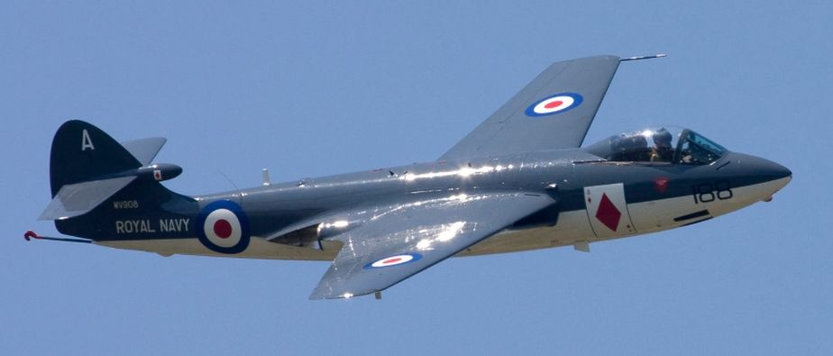 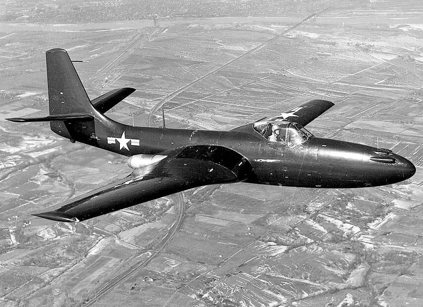
<수영장에는 life guard, 항모에는 plane guard> Plane guard라는 것이 있는데 글자 그대로 수영장에 있는 life guard와 비슷한 것. 함재기가 바다에 빠지면 조종사를 건져내는 역할. 기본적으로 함재기 이착함은 항상 목숨이 왔다갔다하는 위험한 순간. 꽈당탕하며 충돌-폭발하는 것도 문제지만, 이함할 때나 착함할 때나 항모는 맞바람을 일으키기 위해 전속력으로 달림. 이때 바람이 부족하든 폭탄-연료탑재량이 너무 많든 함재기 엔진이 시원찮든 무슨 이유에서라도 속도가 부족하면, 또 착함할 때도 혹시나 arresting gear에 tail hook이 걸리지 않으면 함재기는 그대로 바닷속에 풍덩. 그런데 항모가 전속력으로 달리고 있으므로 보통 항모의 이물에 함재기가 반드시 들이받히게 되어 있고 보통 두동강 나면서 급속으로 꼬로록... 그래서 있는 것이 plane guard. 한국전쟁 전에는 항모의 왼쪽 후방에 구축함을 배치해두고 그게 plane guard 역할을 수행. 함재기가 떨어지는 곳은 항모 전방인데 왜 구축함은 후방에 위치하는가 하면 어차피 항모나 구축함이나 전속력으로 달리고 있는 중이기 때문에 항모가 들이받은 함재기를 건지려면 항모 약간 뒤에 있어야 하기 때문. 그런데 이게 구축함에게는 또 굉장히 위험한 일. 항모는 이착함을 위해 바람 방향에 맞춰 선회하고 달려야 하는데, 항모와 안전거리를 유지한 채로 항모의 선회에 따라 구축함도 함께 선회해야 하기 때문. 까딱하다가는, 특히 야간에는 신호가 어긋나 함재기 대신 구축함이 항모에게 들이받히고 두동강 나기 딱 좋음. 미해군에서는 그런 일이 없었으나 호주해군 항모 HMAS Melbourne이 호주 구축함을 1번, 그리고 미국 구축함을 1번 총 2번 두동강 냈음. (사진1이 HMAS Melbourne의 사고 사진. 사진2가 멜버른과 미국 구축함 USS Frank E. Evans의 충돌 코스)
그러다 한국전쟁 이후로는 헬기로 구조하는 것이 훨씬 더 쉽고 효과적이라서 헬기가 plane guard 역할을 수행. 그러나 여전히 야간에는 구축함이 plane guard를 선다고. * 사진3 속 영국 팬텀이 이함 준비할 때 저 뒤에 보이는 것이 plane guard.
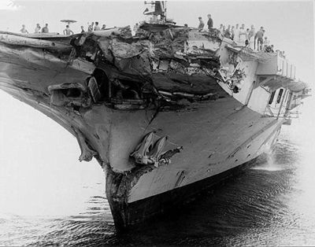 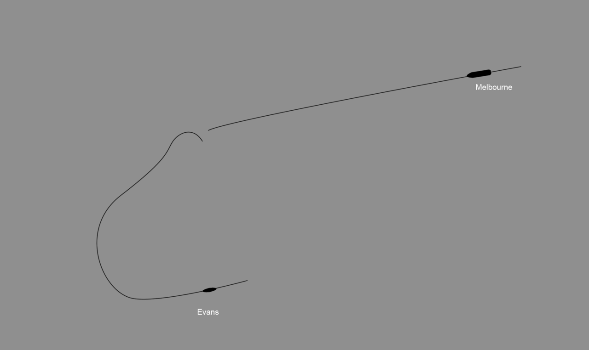 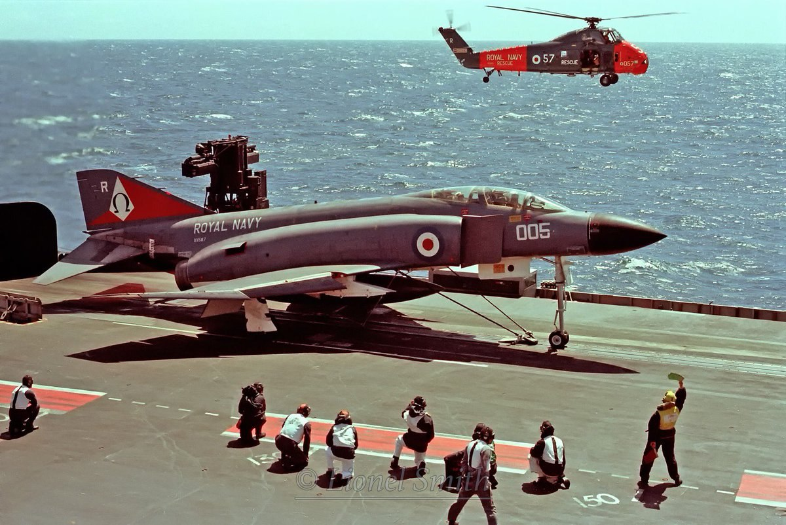
<수천년간 이어온 전통> 사진1은 미해군 항모 비행갑판의 폭탄을 함재기에 싣기 전에 '이거 들어봤어? 이거 맞으면 죽어' '도조가 스팸 먹네' 따위의 낙서를 해놓은 모습. 사진2는 고대 그리스 시대의 slingshot에 쓰는 납으로 된 탄환(bullet). 이걸 가죽띠로 된 sling에 넣고 빙빙 돌리다 한쪽 끝을 놓으면 날아가는 무기. 보통 돌을 탄환으로 썼지만 납으로 된 탄환이 더 멀리 날아가고 더 치명적인 상처를 주었음. 저기에 새겨진 단어는 그리스어로 'Dexai'. 영어로 직역하면 'Catch' 정도인데 의역하면 'Take that'. 즉 "받아라!"
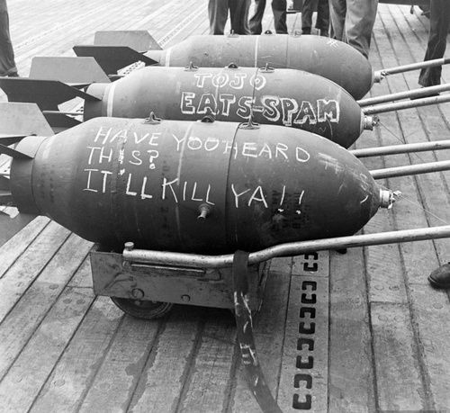 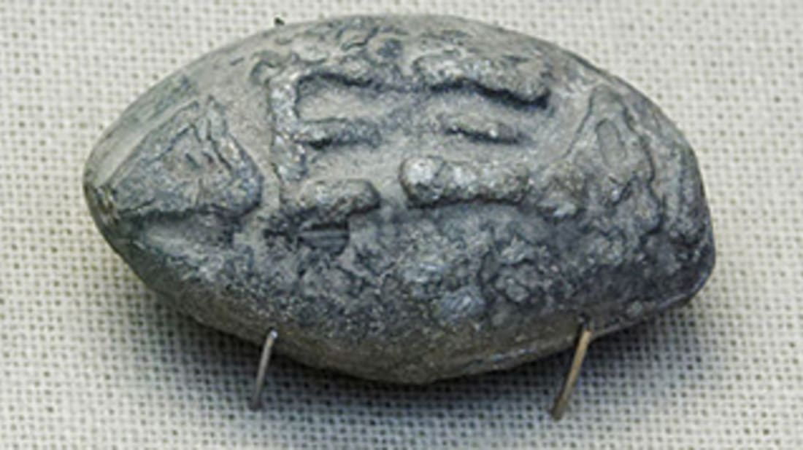